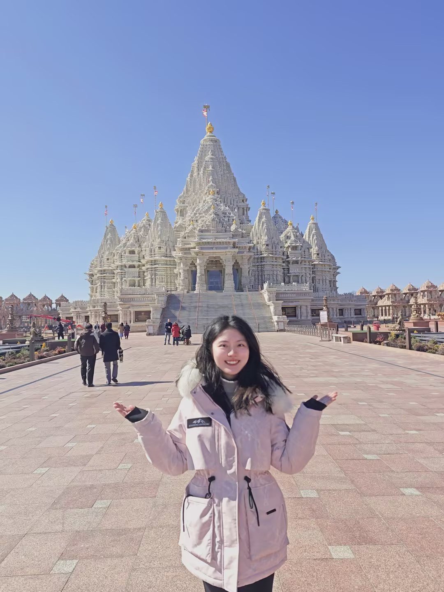
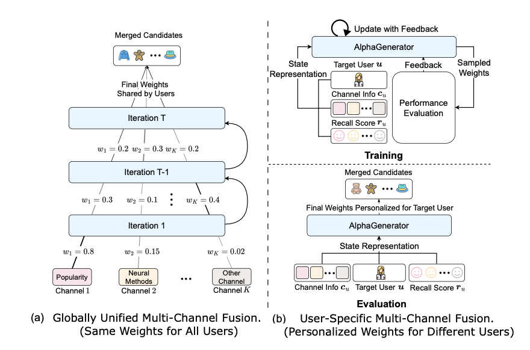
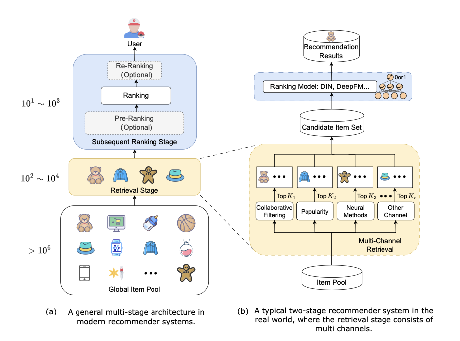
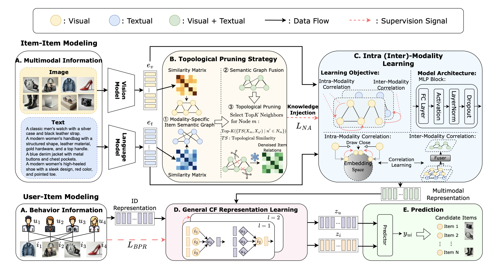
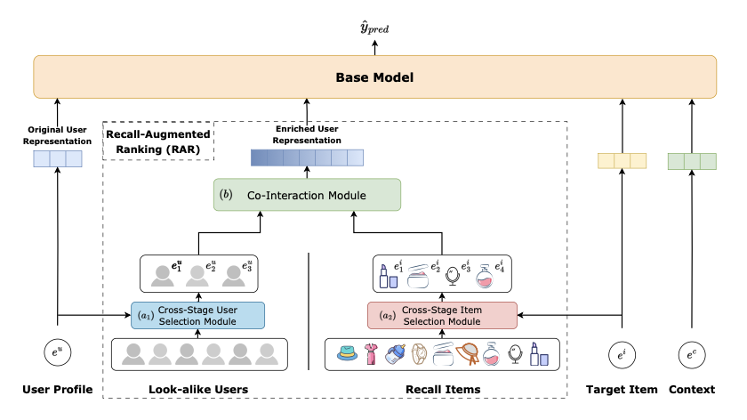
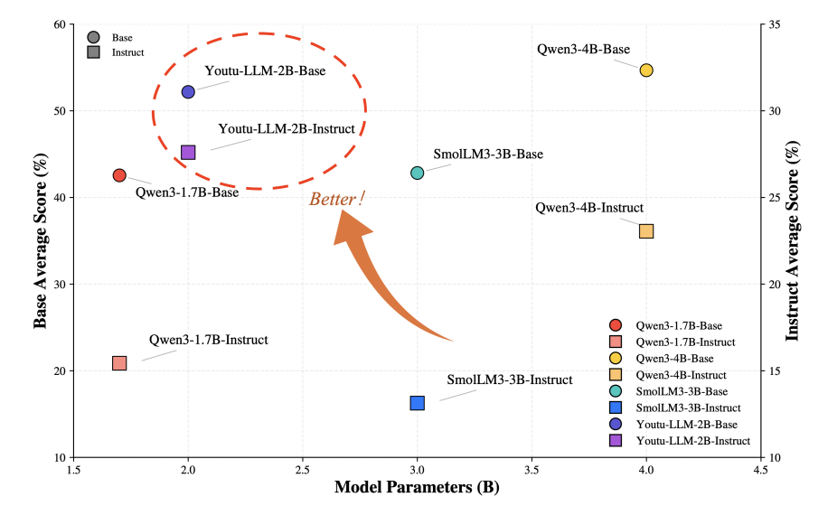
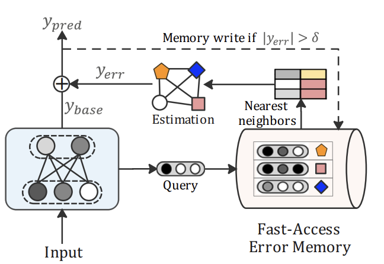
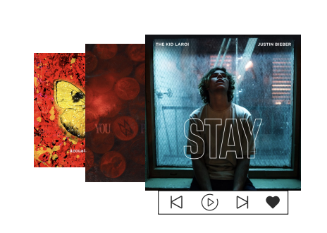
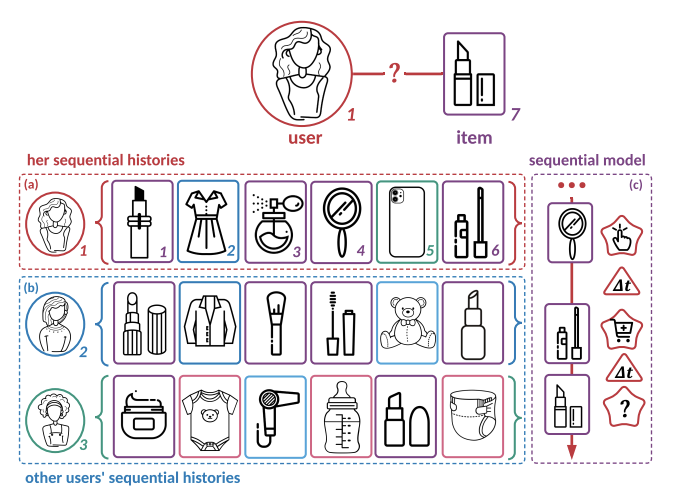

Junjie Huang (黄珺捷)
Ph.D. Student in Computer Science
Shanghai Jiao Tong University (SJTU)
APEX Data & Knowledge Management Lab,
supervised by Prof. Weinan Zhang and Prof. Yong Yu
About Me
I am a Ph.D. student in Computer Science at Shanghai Jiao Tong University (SJTU), working in the APEX Data & Knowledge Management Lab under the supervision of Prof. Weinan Zhang and Prof. Yong Yu. I received my B.Eng. in Artificial Intelligence from the Elite Talent Program at SJTU in 2023.
My research focuses on Large Language Models, AI Agents, Information Retrieval, and Recommender Systems. I have published 7 papers in top-tier conferences/journals (including WWW, AAAI, KDD, TOIS), with 4 first-author papers.
I am currently a research intern at Tencent Youtu Lab (2025–). Previously, I interned at Huawei Noah's Ark Lab (2022–2023) and China Merchants Bank Credit Card Center (2021, 2024).
I have been honored with the National Scholarship twice (Ph.D. 2025, Undergraduate 2020, ranked 1st/76), the China Optics Valley Scholarship, and was recognized as an SJTU Outstanding Graduate.
I'm always open to meeting people from diverse backgrounds. If you're interested in my research or just want to chat, feel free to reach out to me via Email or WeChat.
News
-
Jan 2026
Paper Our Youtu-LLM technical report is released!
"Youtu-LLM: Unlocking the Native Agentic Potential for Lightweight Large Language Models" - Oct 2025 Paper Our survey on retrieval methods in recommender systems published in TOIS.
- Sept 2025 Award Received Ph.D. National Scholarship and SJTU Merit Student!
- Jun 2025 Intern Started internship at Tencent Youtu Lab!
- Jan 2025 Paper Our paper on multi-channel fusion in retrieval is accepted at WWW 2025 (Oral) with Student Travel Award!
- Dec 2024 Paper Our paper (TMLP) is accepted at AAAI 2025.
Publications








Education
Shanghai Jiao Tong University (SJTU)
Shanghai Jiao Tong University (SJTU)
Experience
Tencent — Youtu Lab
China Merchants Bank — Credit Card Center
Honors & Awards
Academic Service
- Reviewer for top conferences/journals: ACM MM, WWW, AAAI, ICML, TKDE
- Teaching Assistant for Graduate Course CS7309: Reinforcement Learning Theory and Algorithms, SJTU, 2026
- Class Youth League Secretary during both undergraduate and doctoral studies at SJTU
- Held leadership roles in Graduate Student Union and SEIEE student organizations